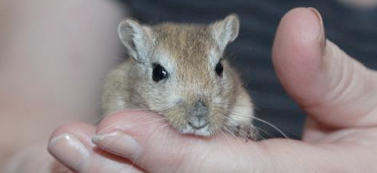
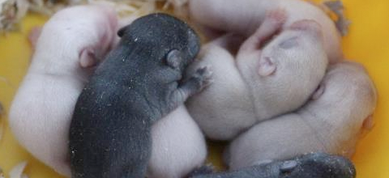
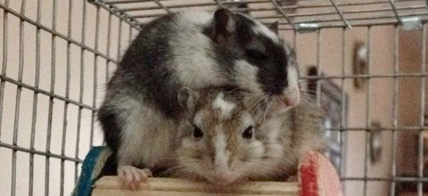
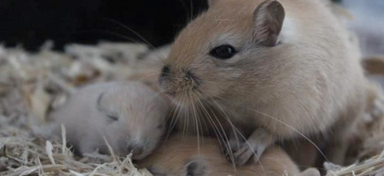
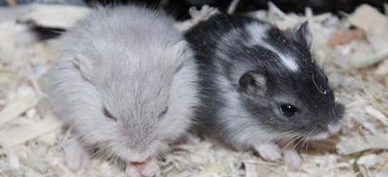
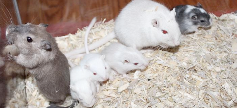
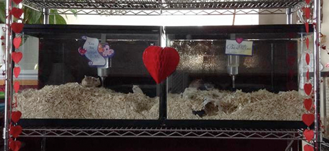

Two young gerbils playing in shaving. Gerbils love to tunnel and burrow in shaving, some are pros and make intricate pathways around the tanks!
Our gerbils are tame and extremely friendly. They are not afraid of hands and they are interacted with often throughout their weeks of growing up!
Week day old pups start to gain their "fuzz" or fur colour. They also huddle together to keep themselves warm, making for adorable pictures!
Although gerbils tunnel within shaving, some do not mind snuggling up on top! Two of our girls in a tank-topper decided they were going to snuggle together atop a wooden house!
Gerbils make great families, here is a picture of an older sister looking after the younger litter while the mother is taking a break!
At about two and a half weeks gerbils open their eyes. They also still have that baby roundness too them, giving them that adorable "fluffball" appearance.
One of our gerbil families, fathers are great help with mothers especially for first litters!
Here at Rock Lake Gerbils, we like to jazz up our tanks each holiday with festive decorations all year round!
Images (c) Rock Lake Gerbils 2014
Welcome
Welcome to the Official Rock Lake Gerbils webpage!
Welcome! This website was made to house information on gerbils in general and to visit our clan, breeding information and available gerbils!
If you have any questions about anything, feel free to contact us!
Check out our facebook page on the right side of the webpage for more frequent updates and information!